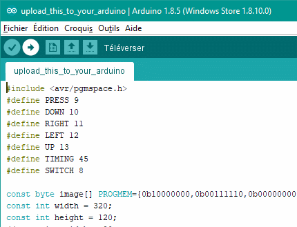

This is the layout i used with the pokken controller, you can add more buttons if you have other projects (i plan on adding an auto init sequence, the up and L1buttons will be useful) :
A Nintendo Switch with splatoon 2 (Obviously)
A dock and a TV + A usb controller that you're willing to destroy (pokken tournament controller is cheap and easy to crack open)
OR
A wireless controller that you're willing to destroy
An arduino with at least 8kb of memory and its usb cord
A PC with java 8 jre and the arduino software installed.
Solder iron and solder
One 180 Ω resistor (could work with bigger ones)
1 30v NPN transistor for each button you want to automate (Minimum 4)
On most controllers, there's a unique singal that will input a button press if you connect it with said button's receptor. Each button has the signal on a side and the button specific recpetor in the other, you just have to test to see where is the signal and where are the receptors. Find a good place to solder your wires, but avoid the buttons themselves if you want to be able to still manually press the buttons once you get your controller back together.
This
is the layout i used with the pokken controller, you can add more
buttons if you have other projects (i plan on adding an auto init
sequence, the up and L1buttons will be useful) :
Solder a wire to each of those, test if touching the signal bus with a button receptor trigger a button press on the switch, get the controller back together makind sure the wires all poke out and and go on.
To be able to activate buttons
we will use PNP transistors. The Emitter of the transistor will be
plugged to the button specific receiver, the collector to the signal
bus and the base to the arduino pins.
This is how everything should be plugged :
You will need a picture to send to your switch :
320px * 120px
24 bits colors bmp file
All non white pixels (0xFFFFFF) will be converted to black
Save the picture in your computer.
Download the file ''arduinoMatrixMaker.jar''
Double click on it, a window should open
Click ''Select file'' and use the explorer to find your bmp file
Click ''Confirm'' to generate the arduino project
Open the file ''upload_this_to_your_arduino/upload_this_to_your_arduino.ino'' that appeared in the directory where the jar file is with the arduino software.

Click
on the arrow to upload the project to the arduino.
Plug your modified controller.
Make sure the Arduino has a reliable source of power plugged in.
Start splatoon and go to the plaza to draw your picture.
Place your cursor in the top left corner with the smallest pen size.
Make sure the modified controller is the active one (press a button on it and if a menu appear press A until you're back in game).
Press the button we wired.
Wait a while for the process to finish.